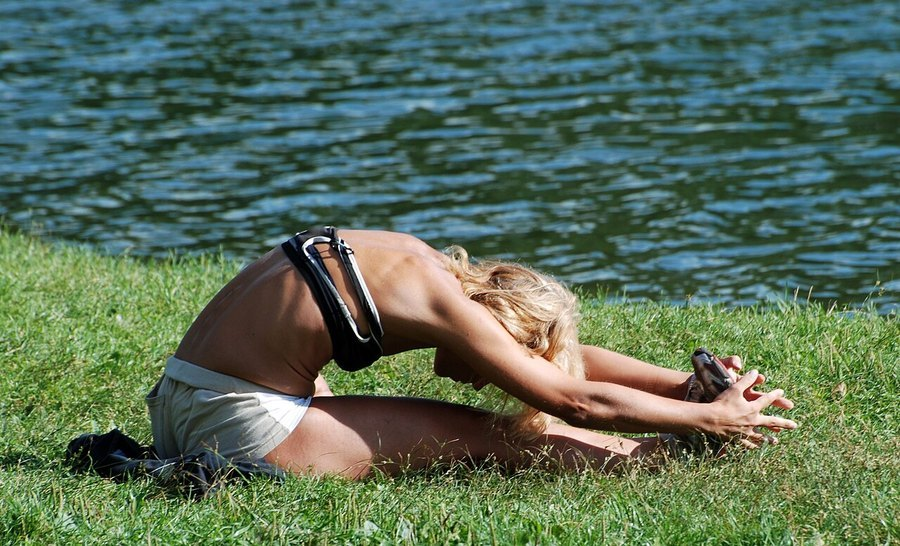

Heat and Cognitive Performance: Does Hot Weather Slow Your Brain Down?
A hot afternoon can leave you foggy, slow to react and quick to lose your train of thought. That's not just in your head. Heat has a real, measurable effect on how the brain performs, and knowing why can help you work around it.

Key takeaways
- Heat can measurably slow cognitive performance. Researchers have repeatedly linked hot conditions to slower reaction time, more errors on attention tasks and reduced working memory.
- Your body is competing for resources. Cooling itself down, through sweating and redirected blood flow, pulls energy and attention away from mental tasks.
- Dehydration and poor sleep make it worse. Even mild fluid loss can slow thinking, and hot nights cut into the deep sleep the brain needs to consolidate memory.
- Some people feel it more. Older adults, people without air conditioning, and anyone on medications that affect sweating or hydration are more vulnerable.
- Confusion plus very hot, dry skin is an emergency. That combination can signal heat stroke and needs immediate medical attention, not a cool drink and a nap.
Yes, heat can slow down how well your brain works. Researchers who study cognition in hot conditions have found slower reaction times, more mistakes on attention and memory tasks, and a harder time concentrating when body or room temperature climbs. The effect isn't dramatic for most healthy adults on an average warm day, but it's real, it's measurable, and it gets more serious as heat and humidity rise.
Does heat actually affect your brain?
Your brain runs best within a fairly narrow temperature range, and your body works hard behind the scenes to keep it there. When the air around you gets hot, or you're physically active in the heat, your body redirects blood flow toward the skin to help release heat, and ramps up sweating to cool through evaporation. Both of those processes draw on resources, water, electrolytes, circulating blood, that would otherwise be available for other things, including the brain.
Researchers who study this describe it as a kind of competition for limited physiological resources. The brain doesn't shut down in the heat, but it has less spare capacity, and tasks that require sustained attention or quick decisions tend to show the strain first.
Which mental tasks take the biggest hit?
Not all thinking suffers equally in hot conditions. The tasks most consistently affected are the ones that demand sustained focus, quick judgment calls, or juggling more than one thing at once:
- Reaction time. Simple response tasks, hitting a button when a light appears, tend to slow down measurably in heat.
- Sustained attention. Staying focused on a repetitive task for a long stretch gets harder, with more lapses and missed details.
- Working memory. Holding a few pieces of information in mind while you use them, mental math, following multi-step instructions, takes a noticeable hit.
- Complex decision-making. Choices with several factors to weigh become slower and more error-prone.
- Mood and irritability. Heat doesn't just slow thinking; it tends to make people more short-tempered, which feeds back into concentration.
Simple, well-practiced tasks you could do half asleep, walking a familiar route, reciting something memorized, tend to hold up better. It's the mentally demanding work that suffers first.
COMPLEX
The memory formula we rate highest in 2026
One formula combined a fully transparent, clinically-dosed label — citicoline, bacopa, phosphatidylserine and B-vitamins — with a 60-day guarantee.
See Today's Price →Why some people are affected more than others
How much heat affects your thinking depends a lot on context. People without reliable air conditioning, especially in older housing, show a bigger drop in cognitive performance during hot stretches than people who can retreat to a cool room. Not being acclimatized matters too: someone used to a hot climate generally copes better than someone hit by a sudden heat wave.
Older adults are worth flagging specifically. Aging tends to blunt the thirst signal, so it's easier to become mildly dehydrated without noticing, and some common medications, certain blood pressure drugs and diuretics among them, change how the body manages fluid and heat. None of this means older adults can't handle warm weather. It means the margin for error is a bit smaller, and it's worth being deliberate about staying cool and hydrated rather than waiting to feel thirsty.
Heat, sleep and next-day thinking
Heat's effect on the brain isn't limited to the moment you're hot. A bedroom that stays warm overnight disrupts sleep, particularly the deeper stages that seem to matter most for consolidating memory. That means a string of hot nights can leave you foggy the next day even if the daytime temperature itself wasn't extreme. For more on why that stage of sleep matters, see our guide to sleep and memory consolidation.
How to protect your focus when it's hot
You can't always control the temperature, but a few habits blunt the effect heat has on thinking:
Stay ahead of dehydration
Drink water steadily through the day rather than waiting until you're thirsty, since thirst is a lagging signal. Even mild dehydration has been linked to slower thinking and a worse mood, a connection covered in more depth in our piece on hydration and cognitive function.
Save demanding tasks for cooler hours
If your schedule allows it, tackle the mentally heavy work, writing, planning, anything with a lot of moving parts, earlier in the day or in the coolest part of your space, and save routine tasks for the hottest stretch.
Cool the room you sleep in
A fan, blackout curtains to block afternoon sun, or simply cracking a window at night can meaningfully lower bedroom temperature and protect the sleep your brain needs to reset.
Take real breaks
Short breaks in a cooler space, even five or ten minutes, give your body a chance to recover and can restore some of the focus heat chips away at.
Go easy on alcohol and heavy caffeine in the heat
Alcohol speeds up fluid loss, and too much caffeine can do the same for some people. Neither helps when your body is already working to manage heat.
When heat becomes a medical emergency
Feeling sluggish or unfocused on a hot day is common and usually resolves once you cool down and rehydrate. Confusion is different. If someone seems disoriented, is not sweating despite the heat, has hot, dry or flushed skin, a very fast pulse, or a body temperature that feels dangerously high, that can point to heat stroke, a medical emergency that needs immediate care. Heat exhaustion, marked by heavy sweating, weakness, nausea or a headache, is less severe but still deserves prompt attention: move to a cool place, hydrate, and seek medical help if symptoms don't improve quickly or worsen. This guide can't tell you which one you're looking at in the moment, so when in doubt, treat it as urgent and get medical help.
The bigger picture
A hot day slowing you down isn't a sign anything is wrong with your memory. It's your body doing its job, just with less to spare for everything else. Staying hydrated, timing demanding work around the temperature, and protecting your sleep go a long way toward keeping your thinking sharp through a heat wave. For the broader set of daily habits that support memory and focus year-round, see our guide to how to improve memory.
Frequently asked questions
Does hot weather really affect your brain?
Yes. Studies on cognition in hot conditions have found slower reaction times, more errors on attention and memory tasks, and reduced working memory as temperatures rise, especially without air conditioning.
Why does heat make it harder to concentrate?
Your body redirects blood flow and energy toward cooling itself through sweating and skin blood flow, which leaves less physiological capacity for demanding mental tasks like sustained attention and quick decision-making.
Who is most affected by heat's impact on thinking?
People without reliable air conditioning, those not acclimatized to hot weather, and older adults are more vulnerable, partly because aging can blunt thirst signals and some common medications affect how the body manages heat and fluids.
Can hot nights hurt memory even if you're not hot during the day?
Yes. A warm bedroom disrupts sleep, particularly the deep sleep stages linked to memory consolidation, so a stretch of hot nights can leave you foggy the next day.
When is heat-related confusion an emergency?
Confusion combined with hot, dry or flushed skin, a very fast pulse, or not sweating despite the heat can signal heat stroke. That's a medical emergency and needs immediate care, not just water and rest.
Support your focus, every season
Heat is a temporary strain on attention and memory, not a sign of decline. For the daily habits and formulas our editors rate highest for supporting memory and focus in 2026, see the picks below.
See the Top 5 Memory Formulas →Related: Hydration and cognitive function · Dehydration and brain fog · Sleep and memory consolidation · Best memory formulas of 2026